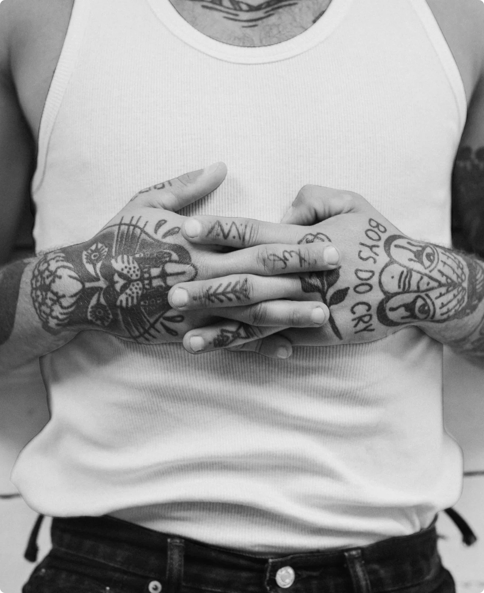
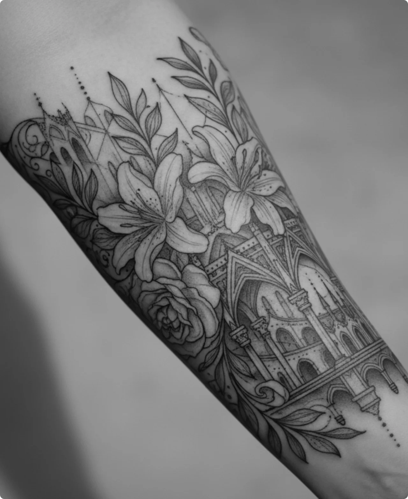
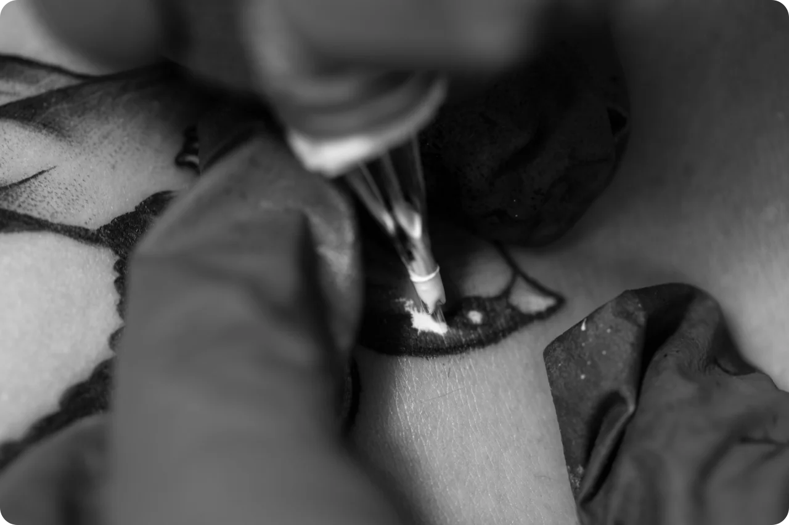

Ink.Art
Booking
Booking
/ Tattoo Studio
Kami mengubah ide, cerita, dan inspirasi Anda menjadi karya seni abadi yang penuh makna.
Jelajahi Sekarang/ Tentang Kami
/ Galeri Kami
Jelajahi Sekarang
Blackwork
Ornamental
Ornamental
Realism

Blackwork
Blackwork
Blackwork
/ Layanan Kami
(01)
Desain tato original yang dibuat berdasarkan cerita, karakter, dan referensi kamu, lalu dikembangkan bersama artist hingga menjadi karya yang benar-benar personal.
(02)
Ubah tato lama menjadi karya baru yang lebih sesuai dengan gaya kamu, dengan perencanaan desain untuk menghasilkan cover-up yang menyatu dengan baik.
(03)

Perawatan dan penyempurnaan tato untuk membantu mempertahankan ketajaman warna, detail, dan kualitas garis agar karya tetap terlihat maksimal dalam jangka panjang.
(04)
Tato dengan garis tipis dan detail yang presisi, cocok untuk desain minimalis, simbol personal, hingga ilustrasi kecil dengan tampilan yang clean dan elegan.
/ Testimoni
Dinda A.
Rio Satria
Made Putra
Alex Morgan

/ Siap Memulai?
Booking Sekarang
Studio
Studio
© copyright by Atrem Project